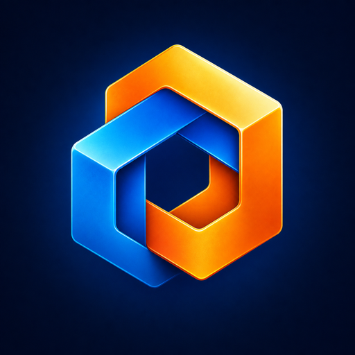
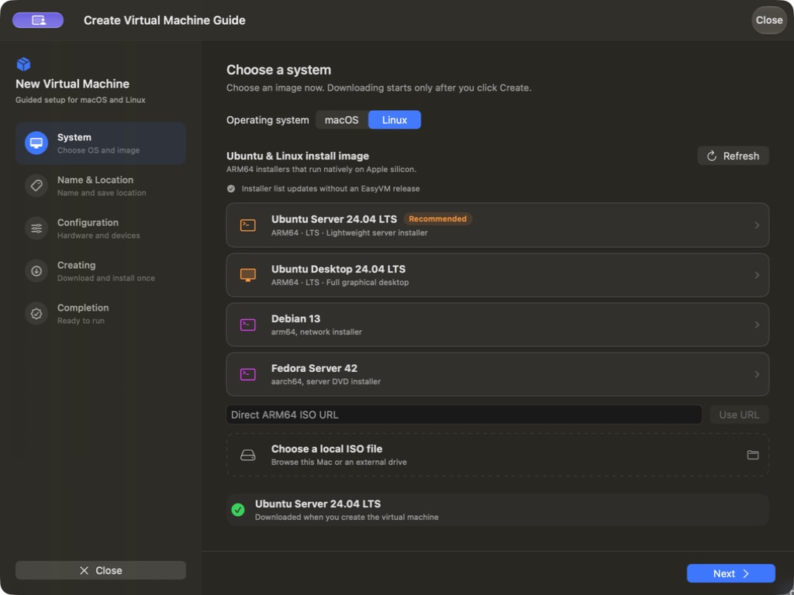
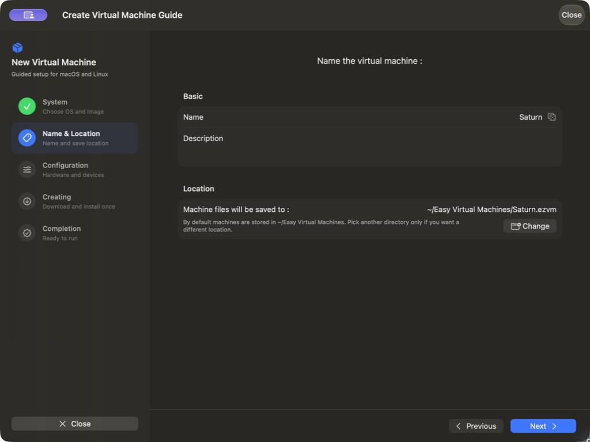
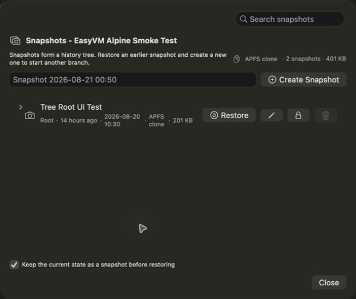

Download at the end
Choose your system and hardware first. RiftVM downloads only after you click Create, uses available resume data to retry interrupted downloads, and reuses saved images.

RiftVMRequires macOS 27 or later and an Apple silicon Mac. Check your macOS version before installing.
Install with Homebrew: brew install --cask riftvm/tap/riftvm
The current app


~/RiftVM Virtual Machines. You can choose another folder.
A complete native workflow
Choose your system and hardware first. RiftVM downloads only after you click Create, uses available resume data to retry interrupted downloads, and reuses saved images.
Stop your machine, then save or restore a snapshot. Browse its history tree, protect important points, and see their storage cost.
Start, stop, and restart your workspace with protection against concurrent use of its writable disk. Omarchy Custom VirGL does not support memory-state save and restore.
Each workspace has its own writable disk. File snapshots preserve stopped-machine states so you can return to an earlier setup.
NAT by default, with VMNet-backed bridged, host-only, logical-network, and port-forwarding modes when selected.
Focused input, dynamic display, clipboard, notifications, shared folders, and authenticated guest coordination.
Two worlds, deeply supported
macOS restore releases come from Apple. Omarchy uses a pinned, verified Factory image and a dedicated integration stack.
Pick a signed IPSW from the refreshed catalog or let Apple resolve the newest version compatible with your Mac.
Download a verified preinstalled workspace and complete guided owner setup.
Reuse cached images when creating more machines. Omarchy creation still connects to verify the signed release manifest.
Export version, host, and VM configuration details directly from Community & Feedback when asking for help.
Ready to go?